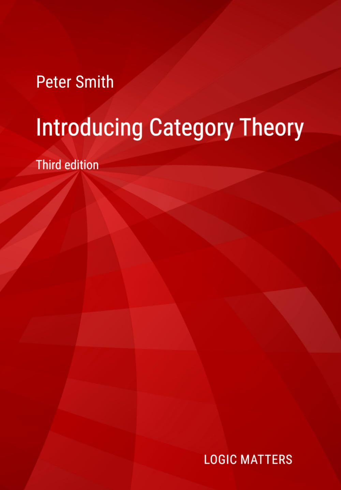

Category theory: online lecture notes, etc.
The links below are to a selection of freely (and legitimately!) available online resources for those interested in category theory at an elementary/intermediate level.
- Three excellent introductions
- Another gentle introduction?
- Some selected lecture notes
- Some selected books and hand-book articles
- A more comprehensive list of online lecture notes and books.
- A few videos
- Introductory readings for philosophers
Three excellent introductions
Where to start? That must depend on your mathematical background, and one size won’t fit all. Here are three highlights among freely available books, which would I think be widely agreed to be excellent in their different ways:
- Over the years, many have found the very accessible early chapters — say the first three, 74pp. — of Robert Goldblatt’s Topoi (originally published 1979, now a Dover pbk) a particularly helpful entry-point.
- Then, a step up, Tom Leinster’s short Basic Category Theory (CUP 2014) is indeed basic and is rightly very well-regarded.
- Emily Riehl’s Category Theory in Context (Dover 2017) is more challenging, in part because it assumes rather more mathematical background, but is also outstanding.
Another gentle introduction

My own notes also aim to provide a very accessible entry-level introduction which you can freely download as a PDF.
Part I of the notes says something about what can be found inside individual categories (products, quotients, limits more generally, exponentials and the like). Part II introduces the distinctive categorial ideas of functors, natural transformations, the Yoneda Lemma, and adjunctions. Part III, which can be read independently of Part II, says a very little about those categories which are elementary toposes.
I have gone for a fairly conventional mode of presentation but at a very gentle (painfully slow?) pace. This makes for a long book — but I make no apology for that: faster-track alternatives are available if you want them! The current version is linked here:
- Introducing Category Theory (3rd edition, version 3.4a, May 2026: pp. xvii+510).
- A corrections page for the first printing of 3rd edition (version 3.1, January 2026).
For encouragement to dip into the PDF to see whether the book might work for you,
And for those like me who prefer to work from a printed text,
- There is new paperback version, Amazon print-on-demand, ISBN 1068346728.
- A hardback version for libraries will appear on or around 1 June.
Selected lecture notes
I used to list here over 30 sets of available lecture notes, without much comment. That was perhaps rather unhelpful. So let me now give a rather shorter selection of lecture notes that do seem to me likely to be particularly useful at an introductory level. (But your mileage of course may vary, which is why an updated version of the original longer list is still available below.)
Notes of P.T. Johnstone’s Lectures for his famed Cambridge Part III course (the topics of later lectures differ from year to year):
- Notes by David Mehrle (pp. 80; lectures given 2015, notes revised 2016).
- Notes by Qiangru Kuang (pp. 68, 2018).
- Notes by Sky Wilshaw (pp. 69, 2024).
Other online notes An idiosyncratic list, in alphabetical order by lecturer:
- Michael Barr and Charles Wells, Category Theory Lecture Notes for ESSLLI (pp. 128, 1999: a cut down version of their Category Theory for Computing Science which is also available online: see below).
- Daniel Epelbaum and Ashwin Trisal, Introductory Category Theory Notes (pp. 56, 2020).
- Julia Goedecke, Category Theory (pp. 63, lecture notes for her Cambridge Part III Maths course, 2013: related materials on her website here).
- Valdis Laan, Introduction to Category Theory (pp. 52, 2003).
- Bartosz Milewski, Category Theory for Programmers (series of long blogposts, available in book format, linked below: also see also his videos, also linked below).
- Jaap van Oosten, Basic Category Theory and Topos Theory (pp. 123, Utrecht 2016).
- Paulo Perrone, Notes on Category Theory (pp. 181, 2021).
- Pavel Safronov, Category Theory (pp. 56 — Oxford lecture notes, 2015).
- Thomas Streicher, Introduction to Category Theory and Categorical Logic (pp. 116, 2003/4).
Selected books and articles, etc.
Some books and other longer published works on category theory These are e-copies of paper publications, at introductory or intermediate level, which happen also to be officially available to download. NB: I’ll keep this list respectable by passing over in silence those copyright-infringing pdf repositories that, of course, none of us use …
In addition, then, to the books already mentioned at the top of this page by Goldblatt, Leinster, and Riehl, you might find some of these particularly helpful/accessible.
- Jiri Adamek, Horst Herrlich and George Strecker, Abstract and Concrete Categories: The Joy of Cats (originally published John Wiley and Sons, 1990).
- Andrea Asperti and Giuseppe Longo. Categories, Types and Structures: Category Theory for the working computer scientist. MIT Press, 1991.
- Michael Barr and Charles Wells, Category Theory for Computing Science (originally published Prentice Hall, 1995: particularly clear and useful).
- Tai-Danae Bradly, Tyler Bryson and John Terilla, Topology: A Categorial Approach (online version of a book published by MIT Press, 2020: a short, elementary, book — the categorial approach is illuminating of both category theory and topology).
- Horst Herrlich and George Strecker, Category Theory (originally published Allyn and Bacon, 1973; third edition 2007: more introductory than their later book with Adamek listed above.)
- Bartosz Milewski, Category Theory for Programmers (book version of his blog posts, 2018)
- David I. Spivak, Category Theory for the Sciences (online version of book published by MIT Press, 2014)
Page of links to reprints, including some classic articles
Wiki
I can’t finish listing text resources without mentioning the massively useful wiki,
- nLab. See in particular category theory in nLab.
A more comprehensive list
- A fuller list of online lecture notes and books. While the list is less selective, I think everything I mention has some virtues and could prove useful to some readers.
Videos
- There is a fun and instructive series at an introductory level by The Catsters (Eugenia Cheng and Simon Willerton).
- Steve Awodey has an excellent series, aimed a little higher (with a compsci flavour), going a little further.
- B. Fong and D. Spivak: elementary lectures on applied category theory.
- Bartosz Milewski has a series of videos (again with a compsci flavour).
- Not introductory, but there over eighty videos of talks at various levels of accessibility, and ranging widely, from the New York City Category Theory Seminar.
I have only listed here substantial enough material of roughly the right level that is, to repeat, officially available online. I don’t plan to be completist — but do please let me know of errors and omissions and newly available lecture notes, etc.
Links last updated 21 May 2026.